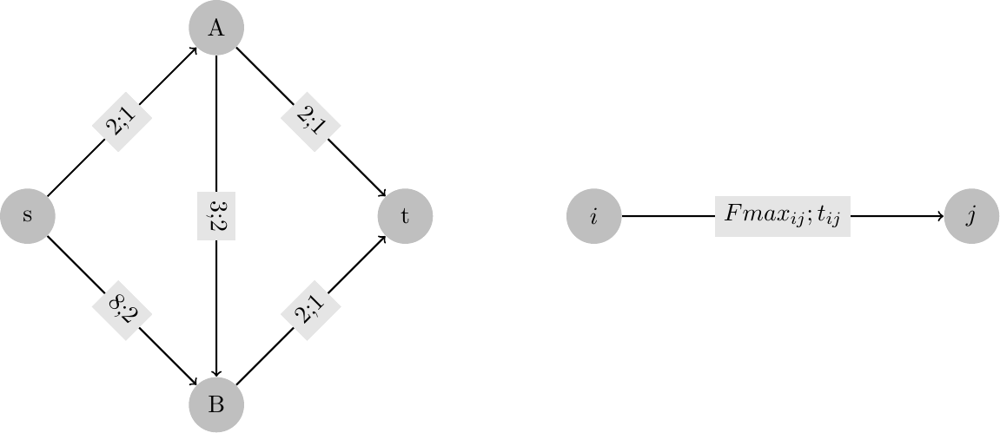
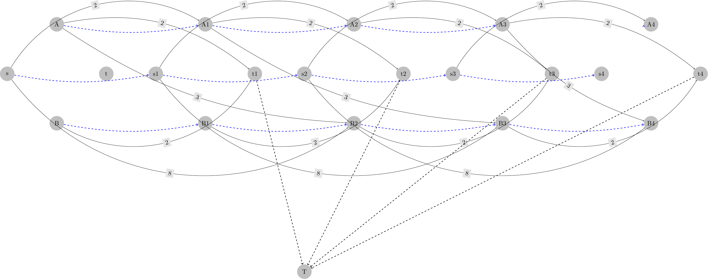

\(\newcommand{\R}{{\mathbb{R}}}\) \(\newcommand{\Z}{{\mathbb{Z}}}\) \(\newcommand{\N}{{\mathbb{N}}}\) \(\newcommand{\var}[1]{{\color{red}{\mathbf{#1}}}}\) \(\newcommand{\param}[1]{{\color{blue}{#1}}}\) \(\newcommand{\mathsc}[1]{{\normalfont\textsc{#1}}}\) \(\def\sc#1{\dosc#1\csod}\) \(\def\dosc#1#2\csod{{\rm{#1{\rm\small #2}}}}\) \(\newcommand{\set}[1]{{\sc#1}}\) \(\newcommand{\mathvar}[1]{\var{#1}}\) \(\newcommand{\half}{{\small{\frac{1}{2}}}}\)
11. Dynamic flows¶
The applications of the generic minimum cost flow model considered up to now correspond to static flows, i.e. to flows that do not vary in time. It is sometimes interesting to consider a generalization which allows for dynamic flows. This generalization will be presented here for the discrete time case. A simple technique for modeling dynamic flows consists in replicating the nodes of the graph over time, a copy for each time instant. Each node of the replicated graph will contain a label with the time instant associated to the original one. Arcs connecting nodes with different time labels can be thought of as flows out from a node at a time instant which will enter another node at a future time instant. If it is assumed that the travel time between nodes \(i\) and \(j\) is \(\Delta_{ij}\) time units, then in the dynamic graph there will be arcs between nodes labeled \(i,t\) and nodes \(j,t+\Delta_{ij}\). The interpretation of a flow along one of these arcs will be that a flow unit that was in \(i\) at time \(t\) will arrive in \(j\) at time \(t + \Delta_{ij}\).
- application
Building evacuation

This network can be “unfolded” in time. Assume we would like to check how many units of flow, as a maximum, can be safely taken to the terminal node in, say, 4 time units. Then, a 4 “frames” network can be defined as follows

In order to determine the maximum amount of people locate at node \(s\) who might be able to exit the building in a specific amount of time, we can solve the maximum flow problem in the expanded graph shown above, using two fictitious nodes \(S = s1\) and \(T\) as source and destination. In the graph, the labels on each arc represents the maximum capacity; there are two arc types: those between nodes with different names which represent flows both in space and in time, and node connecting two nodes with the same name in consecutive time instants. As an example, the arc between node \((s, 1)\) with \((B, 2)\) with capacity 2 represents a maximum flow of 2 units which, starting from the source at time 1, reaches node \(B\) in time instant 2. The arc connecting \((s, 1)\) with \((s, 2)\) instead represents a part of the flow which, at instant 1, remained in node \(s\).
Any implementation if the maximum flow model for this special case needs some non standard definitions in order to allow for an easy definition of the network. In practice it is reasonable to assume that the data contains the description of the graph and the time horizon, and building the expanded network is left to the modeling language itself. As an example, consider the following data describing a more elaborated situation. Here a time horizon of 5 is chosen and a network with 6 arcs is defined:
evacuation.dat¶set DynNODES := s A B t; param MaxT := 5; param DynS := s; param DynT := t; set DynARCS := (s,A) (s,B) (B,A) (A,B) (A,t) (B,t); param: DynFmax DynTime:= s A 5 1 s B 8 3 A B 2 1 B A 3 1 A t 1 1 B t 5 1 ;evacuation.dat¶# to be doneA possibility for the model is the following, where we can observe the definition of the expanded network as well as the re-implementation of the maximum flow problem:
evacuation.mod¶set DynNODES; param MaxT; set DynARCS within DynNODES cross DynNODES; param DynS symbolic in DynNODES; param DynT symbolic in DynNODES; param DynFmax{DynARCS}; param DynTime{DynARCS}; param S symbolic := 'S' ; param T symbolic := 'T'; set NODES := {i in (DynNODES union {S}), t in 1..MaxT} union {i in {T}, t in {MaxT}}; # union {S,1..MaxT} union {T,MaxT}; set ARCS := {(i,t,j,u) in (DynNODES union {S,T}) cross 1..MaxT cross (DynNODES union {S,T}) cross 1..MaxT: ( (i,j) in DynARCS and u == t + DynTime[i,j] ) or ( i == j and u = t+1 )} union {(S,1,DynS,1)} union {(i,t,j,u) in DynNODES cross 1..MaxT cross {T} cross 1..MaxT: i == DynT and u == MaxT}; param Fmax{(i,t,j,u) in ARCS} := if i != j and i != S and j != T then DynFmax[i,j] else Infinity; var Flow{(i,t,j,u) in ARCS} >=0, <= Fmax[i,t,j,u]; var v; maximize TotalFLow: v; s.t. balance {(i,t) in NODES}: sum {(j,u) in NODES: (i,t,j,u) in ARCS} Flow[i,t,j,u] - sum {(j,u) in NODES: (j,u,i,t) in ARCS} Flow[j,u,i,t] = if i == S and t == 1 then v else if i == T and t == MaxT then -v else 0;evacuation.jl¶# to be doneRunning a linear solver on this example generates an optimal solution of value 10 with the following flows:
S 1 s 1 10 s 1 A 2 3 s 1 B 4 3 s 1 s 2 4 A 2 B 3 2 A 2 t 3 1 A 3 A 4 1 A 3 B 4 2 A 3 t 4 1 A 4 t 5 1 B 3 t 4 2 B 4 t 5 5 s 2 A 3 4 t 3 t 4 1 t 4 T 5 4 t 5 T 5 6The example shown here is extremely simplified; in a realistic application other fundamental aspects should be included. In particular it would be advisable that out of each node the whole flow is routed along a single path and not split into different flows. This is needed in order to be able to put clear and not ambiguous directions to follow when leaving a node.